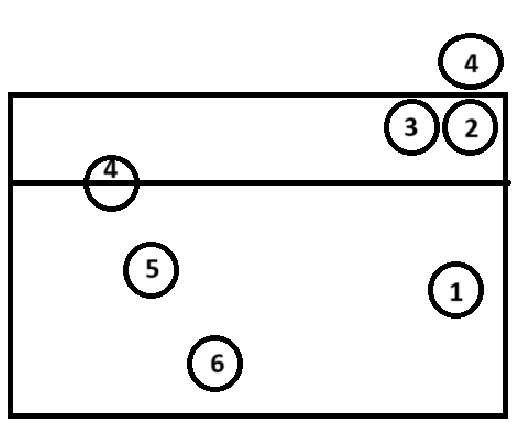

基本佔位(接發球適用)
此為排球的基本站位，攻擊時通常會交給3號位球員來舉球，再交給2號位及4號位來進行攻擊

防守佔位
當對方進攻時，通常會站的位置(不過還是以溝通為主，如果是跟陌生人打球建議還是跟對方商量好守備的範圍及位置。才不會受傷~)
假如當前是由對面4號位(大砲)扣球，我方2號3號球員會上去進行攔網，如果攔網球員選擇防守直線球，1號位球員就要上前準備接吊球或touch，4號位要準備守3米線附近的吊球或touch，6號位則會退到底線準備守斜線球及攔網touch，5號位則要稍微往右前移動準備守大斜線的扣球及吊球。
